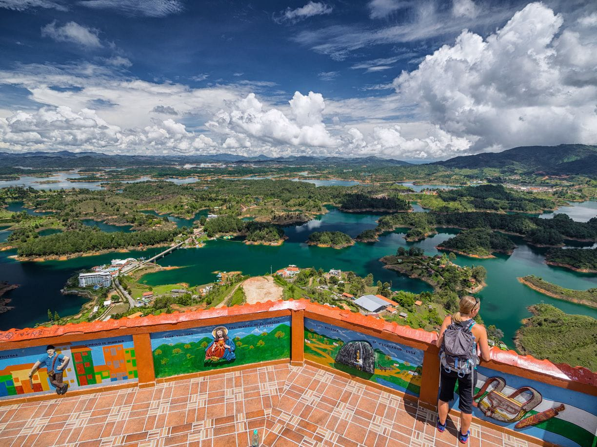
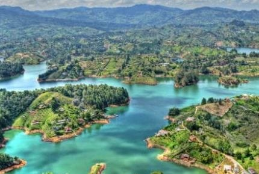
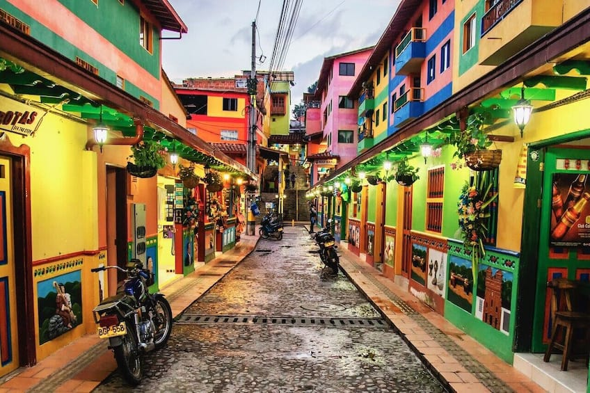

GUATAPE
Guatape es uno de los destinos turisticos mas reconocidos de Antioquia y de Colombia. Es famoso por sus calles llenas de color, sus zocalos, sus paisajes naturales y el enorme Peñon de Guatape.
El municipio se encuentra rodeado por un gran embalse, creando paisajes ideales para disfrutar de actividades acuaticas y de la naturaleza.
Sus calles, casas decoradas y plazas hacen que recorrer Guatape sea una experiencia llena de color, cultura y tradicion.
Antioquia, Colombia
Andina
Templado
Peñon de Guatape
HISTORIA Y TRADICION
El pueblo de los zocalos
Guatape conserva una de las tradiciones arquitectonicas mas caracteristicas de Colombia: los zocalos decorativos que adornan las fachadas de muchas de sus casas.
Estos diseños representan diferentes elementos de la vida cotidiana, animales, plantas, simbolos y tradiciones de sus habitantes.
Gracias a sus colores y diseños, las calles de Guatape se han convertido en uno de los paisajes urbanos mas reconocibles del pais.
Una de las principales caracteristicas de Guatape
LUGARES DESTACADOS

PEÑON DE GUATAPE
Una enorme formacion rocosa desde donde se pueden observar los paisajes del embalse.

EMBALSE DE GUATAPE
Un enorme paisaje de agua rodeado de montañas y naturaleza.

PUEBLO DE GUATAPE
Calles coloridas, plazas y casas decoradas con sus tradicionales zocalos.

PARQUE PRINCIPAL
Un espacio ideal para caminar, descansar y conocer la vida local.
ACTIVIDADES
AVENTURA
Sube el Peñon y disfruta de una de las vistas mas impresionantes de la region.
EMBALSE
Disfruta diferentes actividades relacionadas con el agua y los paisajes del embalse.
FOTOGRAFIA
Recorre las calles llenas de colores y descubre sus caracteristicos zocalos.
¿POR QUE VISITAR GUATAPE?
Naturaleza
Disfruta montañas, agua y paisajes naturales.
Color
Sus casas y zocalos llenan de color cada una de sus calles.
Aventura
Encuentra diferentes actividades para disfrutar al aire libre.
Paisajes
El Peñon y el embalse ofrecen vistas espectaculares.